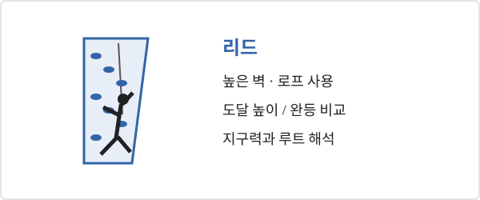

스포츠클라이밍 · 여자 리드
경기 방식

높은 벽의 한 루트를 올라 도달 높이로 순위를 가린다. 로프를 사용하며, 완등 여부와 홀드 도달 기록이 핵심이다.
예선 규정
2027–2028 주요 예선
| 대회 · 날짜 | 구분 / 출전권 | 여자 리드 |
|---|---|---|
| 이스탄불 · 06.16–27LA28 직접 예선 | 유럽게임¹ · 종목별 1장 | 예정 |
| 리마 · 07.24–08.08LA28 직접 예선 | 팬아메리카게임¹ · 종목별 1장 | 예정 |
| 브르노 · 08.13–22LA28 직접 예선 | 세계선수권 · 종목별 1장 | 예정 |
| 남아프리카 · 10.07–10LA28 직접 예선 | 아프리카 예선 · 종목별 1장 | 예정 |
| 호주 · 10.14–17LA28 직접 예선 | 오세아니아 예선 · 종목별 1장 | 예정 |
| 상하이 · 11.10–14LA28 직접 예선 | 아시아 예선 · 종목별 1장 | 예정 |
| 도쿄 · 05.04–07올림픽 Q-시리즈 | 시리즈 합산² | 예정 |
| 상하이 · 05.11–14올림픽 Q-시리즈 | 시리즈 합산² | 예정 |
| 올랜도 · 06.08–11올림픽 Q-시리즈 | 시리즈 합산² | 예정 |
¹ 유럽게임·팬아메리카게임 날짜는 종합대회 전체 기간이다. 클라이밍 세부 경기 날짜와 참가 자격은 별도 공지를 확인해야 한다. 한국 선수의 대륙 경로는 아시아 예선이다.
² Q-시리즈 출전권은 세 대회 합산으로 배정한다. 성별 최소 리드 4장·볼더 4장·스피드 6장이며, 각 개최지마다 같은 수를 배정하는 뜻이 아니다. 2027 직접 예선의 ‘1장’은 성별·종목별 기준이다.
쿼터 획득 현황
| NOC | 선수 | 획득 경로 | 일자 |
|---|
주요 대회 결과
2025–2026 대회 성적
2025
| 대회 · 날짜 | 여자 리드 |
|---|---|
| 2025 시즌 최종 순위시즌 TOP 10 | GBR MCNEICE 1 KOR SEO 2 ITA ROGORA 3 USA SANDERS 4 SLO REKAR 5 BEL DOUMONT 6 SLO GARNBRET 7 KOR KIM 8 SLO KRAMPL 9 FRA HILY 10 |
| 서울 · 2025.09.21–28세계선수권 | SLO GARNBRET 1 SLO REKAR 2 KOR SEO 3 GBR MCNEICE 4 USA SANDERS 5 FRA AVEZOU 6 SLO RAKOVEC 7 AUT OBLASSER 8 |
| Wujiang · 25–27 April월드컵 | GBR MCNEICE 1 KOR SEO 1 USA SANDERS 3 |
| Bali · 2–4 May월드컵 | GBR MCNEICE 1 KOR SEO 2 JPN MORI 3 |
| Innsbruck · 25 – 29 June월드컵 | SLO GARNBRET 1 ITA ROGORA 2 GBR MCNEICE 3 |
| Chamonix · 11–13 July월드컵 | KOR SEO 1 USA SANDERS 2 GBR MCNEICE 3 |
| Madrid · 17–19 July월드컵 | USA SANDERS 1 ITA ROGORA 2 USA RABOUTOU 3 |
| Koper · 5–6 September월드컵 | SLO GARNBRET 1 KOR SEO 2 ITA ROGORA 3 |
| OVERALL월드컵 | GBR MCNEICE 1 KOR SEO 2 ITA ROGORA 3 |
2026
| 대회 · 날짜 | 여자 리드 |
|---|---|
| 2026 시즌 중간 순위시즌 TOP 10 | USA SANDERS 1 KOR SEO 2 SLO GARNBRET 3 AUT PILZ 4 SLO REKAR 5 FRA AVEZOU 6 GBR MCNEICE 7 KOR KIM 8 BUL TOTKOVA 9 JPN KOIKE 10 |
| Wujiang · 8–10 May월드 시리즈 | USA SANDERS 1 SLO GARNBRET 2 KOR SEO 3 |
| Prague · 3–7 June월드 시리즈 | USA SANDERS 1 KOR SEO 2 FRA AVEZOU 3 |
| Innsbruck · 17–21 June월드 시리즈 | SLO GARNBRET 1 USA SANDERS 2 KOR SEO 3 |
| Chamonix · 10–12 July월드 시리즈 | USA SANDERS 1 BUL TOTKOVA 2 KOR SEO 3 |
| Koper · 4–5 September월드 시리즈 | SLO GARNBRET 1 USA RABOUTOU 2 KOR SEO 3 |
| Santiago · 23–25 October월드 시리즈 | 예정 |